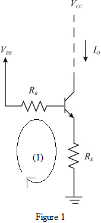

The expression for the voltage is,

The expression for the resistance is,
Apply Kirchhoff’s voltage law in loop (1).
Substituteand.
…… (1)
Refer to Figure P6.138 in the text book.
Draw the Thevnin’s equivalent of the circuit as shown in Figure P6.138 in the text book.

The expression for the voltage is,
The expression for the resistance is,
Apply Kirchhoff’s voltage law in loop (1).
Substituteand.
…… (1)
The expression for the current is,
Substitute for .
.
Hence, the expression for the current is.